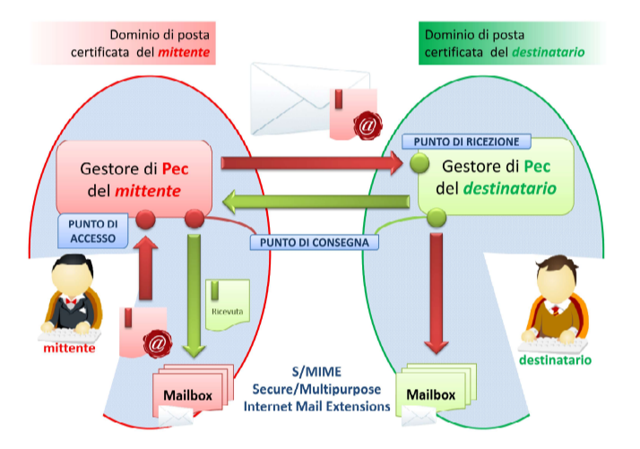

📧 Cos'è la PEC
La Posta Elettronica Certificata (PEC) è un'evoluzione della posta elettronica tradizionale che le conferisce valore legale, equiparandola alla raccomandata con ricevuta di ritorno. È nata per rendere più sicura, tracciabile ed efficiente la trasmissione documentale tra cittadini, imprese e Pubbliche Amministrazioni.
Introdotta in Italia nel 2005, la PEC è gestita da enti certificati autorizzati da DigitPA (già CNIPA), e garantisce l’autenticità del mittente, l’integrità del contenuto e la tracciabilità della consegna.
⚙️ Funzionamento della PEC
Il sistema PEC richiede l’utilizzo di domini dedicati, separati da quelli della posta elettronica tradizionale, per garantire sicurezza e affidabilità. Il messaggio inviato è racchiuso in una busta di trasporto firmata digitalmente e protetta durante il trasferimento.
🔗 Entità coinvolte nel sistema PEC
- 📤 Il mittente
- 📥 Il destinatario
- 🛡️ Il gestore del mittente
- 🛡️ Il gestore del destinatario
- 🌐 La rete di comunicazione (Internet)
- 📎 Il messaggio PEC
📨 Processo di Trasmissione
- Il mittente invia il messaggio al proprio gestore PEC.
- Il gestore verifica la correttezza del messaggio e invia una ricevuta di accettazione.
- Il messaggio è inserito in una busta digitale firmata e inviato al gestore destinatario.
- Il gestore destinatario conferma la ricezione e invia una ricevuta di presa in carico.
- Il messaggio viene recapitato alla casella del destinatario dopo ulteriori controlli.
- Il mittente riceve la ricevuta di avvenuta consegna.
Nota: la PEC certifica la consegna, ma non garantisce l’effettiva lettura del messaggio da parte del destinatario.
📌 Caratteristiche della PEC
| Origina da un indirizzo e-mail e da un gestore certificato. | Garantisce l'integrità del messaggio durante il trasferimento. | Offre protezione e privacy nelle comunicazioni. |
| Include una ricevuta di consegna con valore legale. | Assicura la data di invio e ricezione del messaggio. | Previene contestazioni per messaggi non ricevuti. |
📃 Tipologie di Ricevute PEC
✅ Ricevuta di Accettazione
Conferma che il gestore del mittente ha preso in carico il messaggio.
📦 Ricevuta di Presa in Carico
Attesta il passaggio di responsabilità tra i gestori.
📬 Ricevuta di Avvenuta Consegna
Conferma che il messaggio è stato consegnato alla casella del destinatario.
🧾 Ricevuta Completa
Include tutti i dati di certificazione e il messaggio originale.
✉️ Ricevuta Breve
Contiene solo hash crittografici per ridurre il traffico dati.
📑 Ricevuta Sintetica
Contiene solo il file XML con i dati di certificazione.
❌ Ricevuta di Non Accettazione
Segnala problemi come virus o mittente falso.
📭 Ricevuta di Mancata Consegna
Inviata entro 24 ore se il messaggio non arriva a destinazione.
🛑 Ricevuta di Rilevazione Virus
Inviata quando è rilevata una minaccia nel contenuto.
🔐 Sicurezza, Integrità e Privacy
La PEC conserva le tracce delle comunicazioni per 30 mesi, garantendo tracciabilità anche in caso di smarrimento delle ricevute. La busta firmata digitalmente protegge il messaggio da modifiche durante il trasferimento (grazie allo standard S/MIME).
Per una protezione ancora più elevata, l’utente può firmare digitalmente il messaggio, garantendone confidenzialità, autenticità e non ripudio.
🔒 Cosa Garantisce la PEC
- Origine certificata del messaggio
- Impossibilità di alterare il contenuto durante l’invio
- Privacy e sicurezza della comunicazione
- Attestazione legale della consegna
- Validità temporale e non ripudio
✅ Vantaggi della PEC